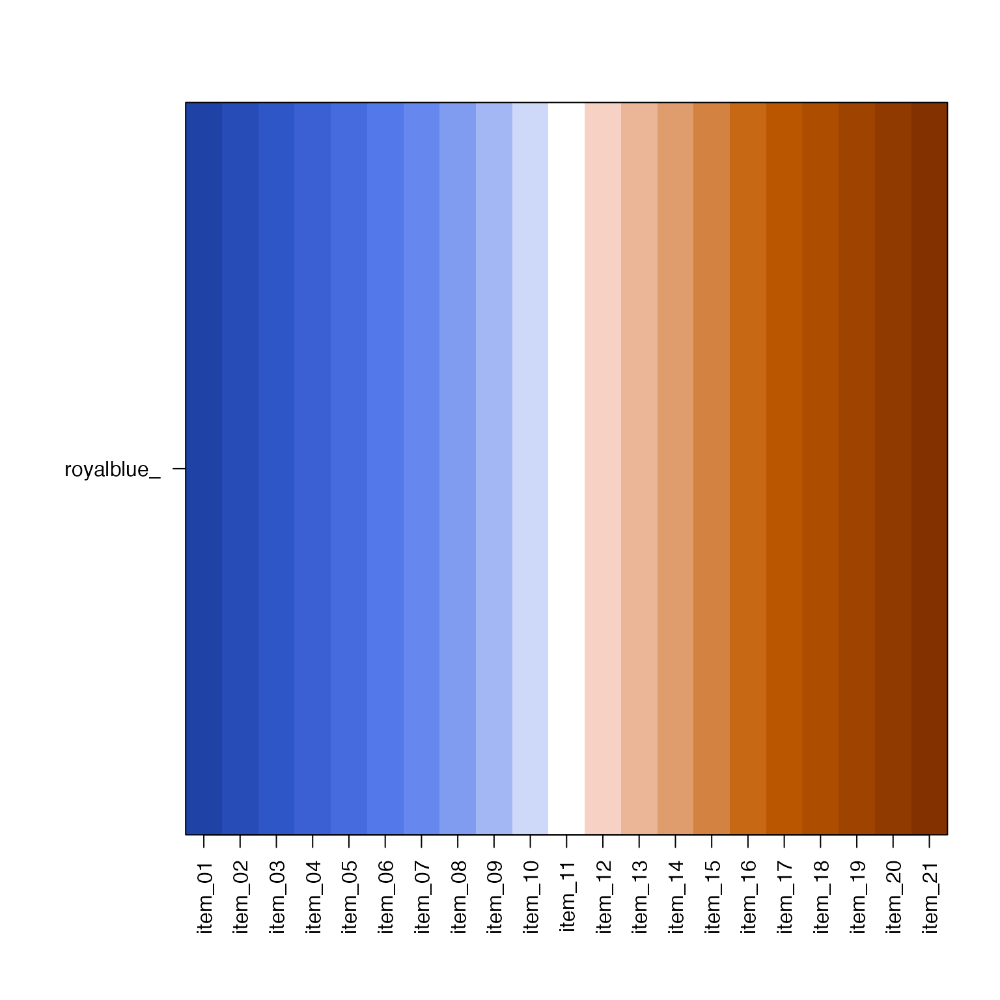
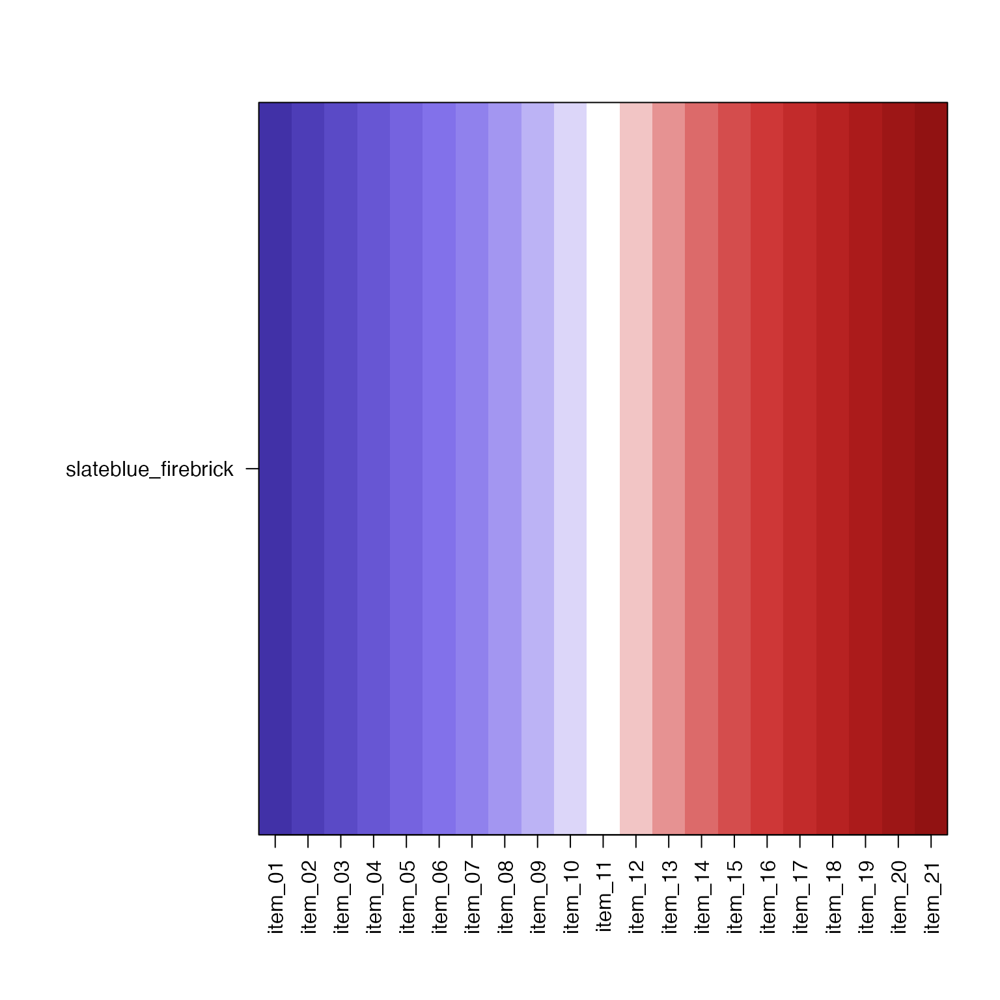
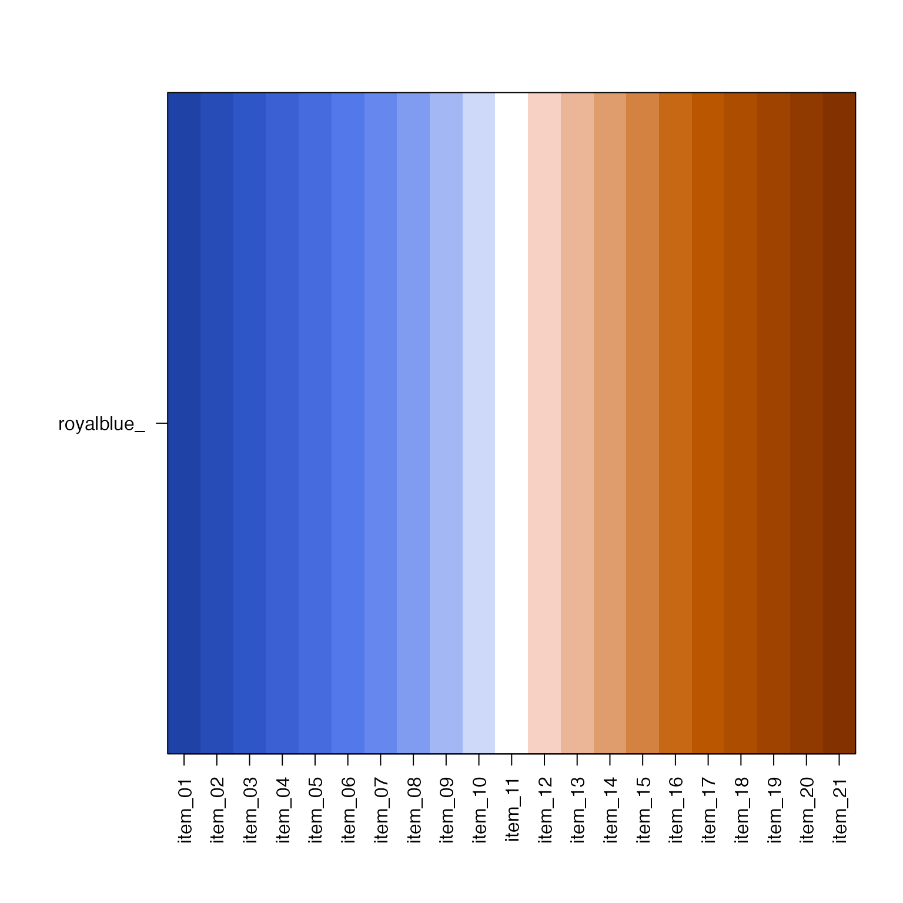
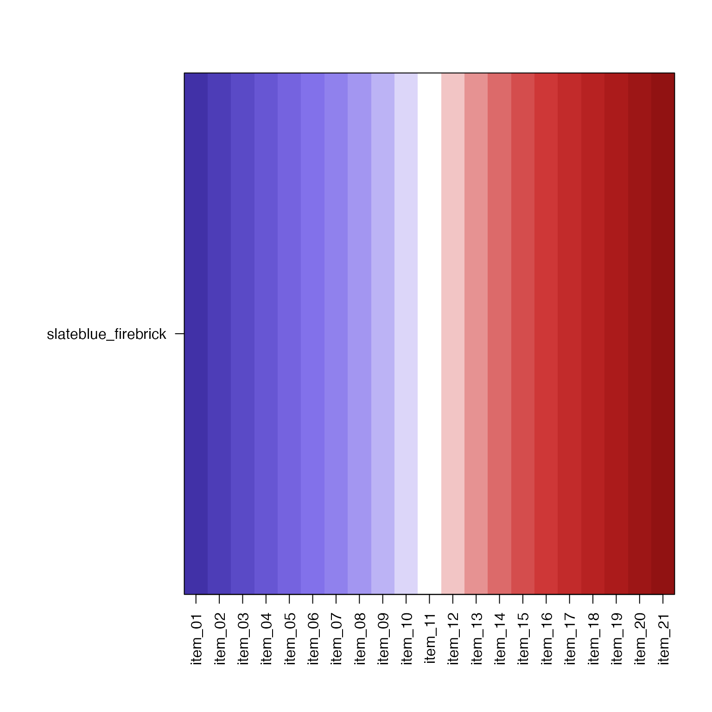
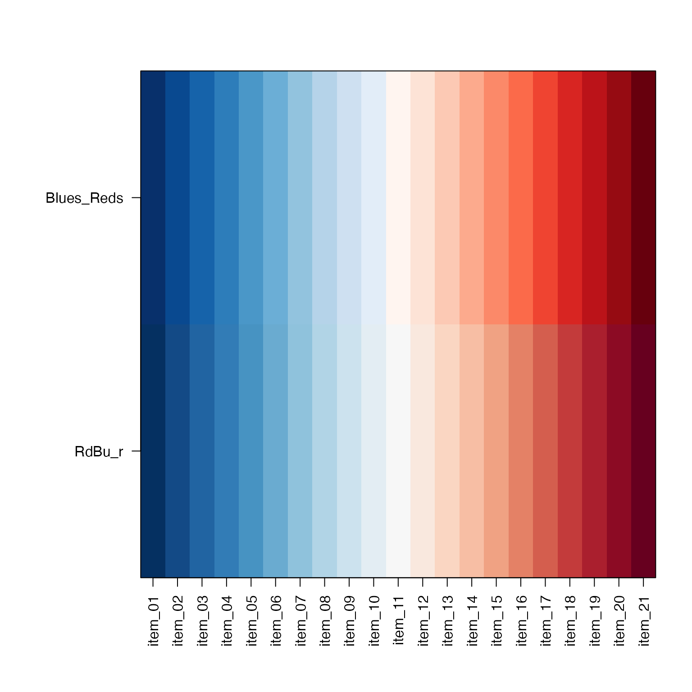
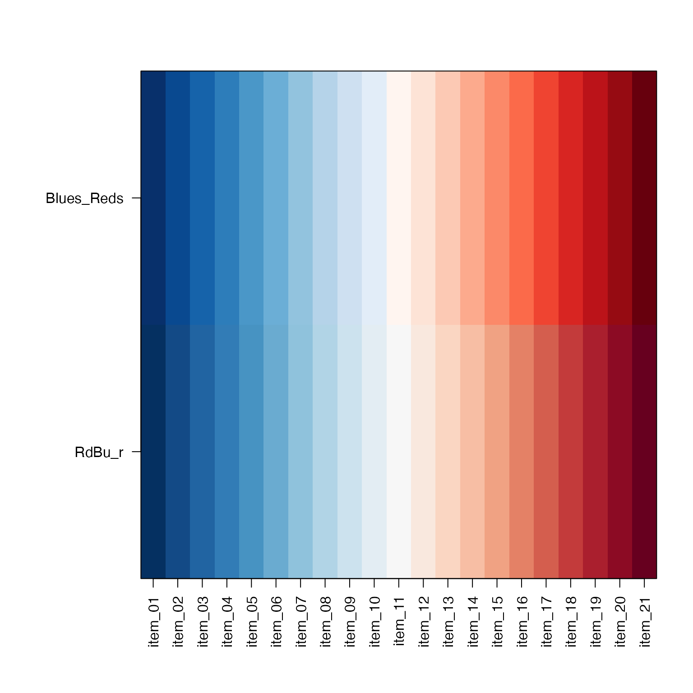
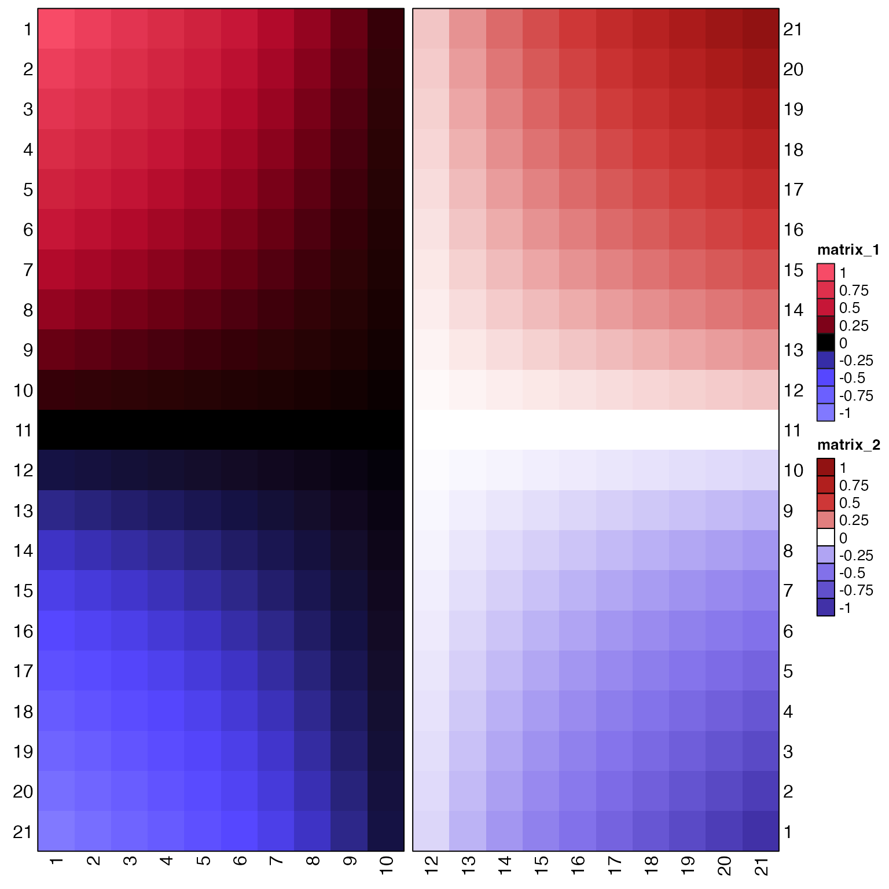
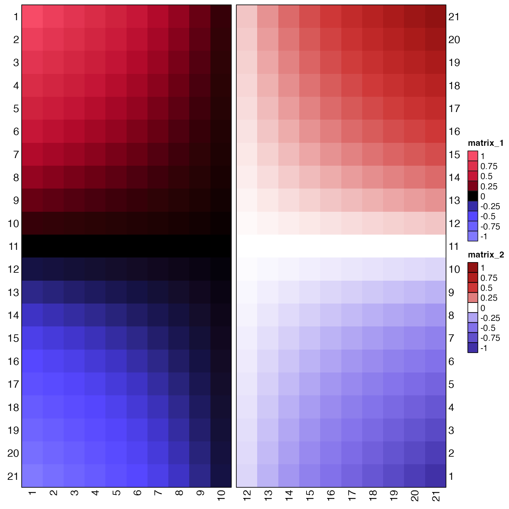

Make divergent color gradients that may also use jam_linear and jam_divergent
make_jam_divergent(linear1, linear2 = NULL, lite = TRUE, n = 21, ...)Arguments
- linear1
characterinput consisting of one of:a single
characterR colora single
charactercolor gradient namea
charactervector of R colors. When supplying a vector of colors, the order is expected to be from blank to maximum color
- linear2
characterinput consisting of one of:a single
characterR colorNULLin which case the color(s) defined bylinear1are passed tocolor_complement()a single
charactercolor gradient namea
charactervector of R colors. When supplying a vector of colors, the order is expected to be from blank to maximum color
- lite
logicalindicating whether the middle color should be lite (white), or whenlite=FALSEthe middle color will be dark (black). Whenlinear1orlinear2are provided as a named color gradient, such as"Reds"or"Blues", that gradient is used as-is, even if the gradient is designed with a light (or dark) neutral color, therefore ignoringlite.- n
integernumber of final colors to produce. Note thatnmust be an odd number, in order to preserve the middle color.- ...
additional arguments are passed to functions called as needed.
Details
This function is intended for a broad capability to create divergent color gradients. It can take several types of input for each "side" of a divergent gradient, and will apply light (white) or dark (black) middle color as defined.
The types of input recognized:
characterstring indicating a single R color, which is passed tojamba::getColorRamp()in order to create one linear color gradient with the relevant light or dark baseline color.charactervector indicating a specific sequence of R colors, also passed tojamba::getColorRamp()to return a single linear color gradient. In this case, the color vector should already include the baseline light (white) or dark (black) color. The order of colors is expected to be from blank color to maximum color.characterstring indicating the name of a recognized color gradient, which can be fromRColorBrewer,viridis, or one of the names injam_linear.
When a color from jam_linear is provided, the appropriate gradient
is used for the corresponding lite or dark baseline color,
where lite=TRUE uses jam_linear, and lite=FALSE uses the
appropriate half gradient from jam_divergent.
Note that this function does not apply the color gradient to a range
of numeric values. For that capability, use col_div_xf() with the
color gradient produced by this function.
See also
Other colorjam gradients:
col_div_xf(),
col_linear_xf(),
twostep_gradient()
Examples
jamba::showColors(jam_linear)
 jg1 <- make_jam_divergent("royalblue", "orangered")
jamba::showColors(jg1)
jg1 <- make_jam_divergent("royalblue", "orangered")
jamba::showColors(jg1)
 showDichromat(jg1)
showDichromat(jg1)
 jg1b <- make_jam_divergent("royalblue", main="Supplied as one color")
jamba::showColors(jg1b)

jg2 <- make_jam_divergent("slateblue", "firebrick", n=21)
jamba::showColors(jg2)

showDichromat(jg2)
jg1b <- make_jam_divergent("royalblue", main="Supplied as one color")
jamba::showColors(jg1b)

jg2 <- make_jam_divergent("slateblue", "firebrick", n=21)
jamba::showColors(jg2)

showDichromat(jg2)
 jg3 <- make_jam_divergent("slateblue", "firebrick", lite=FALSE, n=21)
jamba::showColors(jg3)
jg3 <- make_jam_divergent("slateblue", "firebrick", lite=FALSE, n=21)
jamba::showColors(jg3)
 showDichromat(jg3)
showDichromat(jg3)
 # Compare manually assembled Blues-Reds to "RdBu_r"
jg4 <- make_jam_divergent("Blues", "Reds", lite=TRUE, n=21)
jamba::showColors(c(jg4,
list(RdBu_r=jamba::getColorRamp("RdBu_r", n=21))))

# show "inferno"
jg5 <- make_jam_divergent("inferno", lite=FALSE, n=21, gradientWtFactor=1)
jamba::showColors(jg5)
# Compare manually assembled Blues-Reds to "RdBu_r"
jg4 <- make_jam_divergent("Blues", "Reds", lite=TRUE, n=21)
jamba::showColors(c(jg4,
list(RdBu_r=jamba::getColorRamp("RdBu_r", n=21))))

# show "inferno"
jg5 <- make_jam_divergent("inferno", lite=FALSE, n=21, gradientWtFactor=1)
jamba::showColors(jg5)
 # Optional ComplexHeatmap
if (jamba::check_pkg_installed("ComplexHeatmap")) {
xseq <- seq(from=-1, to=1, by=0.1);
mseq <- matrix(xseq, ncol=1);
m <- mseq %*% t(mseq);
rownames(m) <- seq_len(nrow(m));
colnames(m) <- seq_len(ncol(m));
hm1 <- ComplexHeatmap::Heatmap(m[,1:10],
cluster_columns=FALSE,
cluster_rows=FALSE,
row_names_side="left",
border=TRUE,
heatmap_legend_param=list(
border="grey10",
at=seq(from=-1, to=1, by=0.25),
color_bar="discrete"),
col=jg3[[1]])
hm2 <- ComplexHeatmap::Heatmap(m[21:1,12:21],
cluster_columns=FALSE,
cluster_rows=FALSE,
border=TRUE,
heatmap_legend_param=list(
border=TRUE,
at=seq(from=-1, to=1, by=0.25),
color_bar="discrete"),
col=jg2[[1]])
hm1 + hm2
}
#> Warning: Row names of heatmap 2 are not consistent with the main heatmap (1). It
#> may lead to wrong conclusion of your data. Please double check.

# Optional ComplexHeatmap
if (jamba::check_pkg_installed("ComplexHeatmap")) {
xseq <- seq(from=-1, to=1, by=0.1);
mseq <- matrix(xseq, ncol=1);
m <- mseq %*% t(mseq);
rownames(m) <- seq_len(nrow(m));
colnames(m) <- seq_len(ncol(m));
hm1 <- ComplexHeatmap::Heatmap(m[,1:10],
cluster_columns=FALSE,
cluster_rows=FALSE,
row_names_side="left",
border=TRUE,
heatmap_legend_param=list(
border="grey10",
at=seq(from=-1, to=1, by=0.25),
color_bar="discrete"),
col=jg3[[1]])
hm2 <- ComplexHeatmap::Heatmap(m[21:1,12:21],
cluster_columns=FALSE,
cluster_rows=FALSE,
border=TRUE,
heatmap_legend_param=list(
border=TRUE,
at=seq(from=-1, to=1, by=0.25),
color_bar="discrete"),
col=jg2[[1]])
hm1 + hm2
}
#> Warning: Row names of heatmap 2 are not consistent with the main heatmap (1). It
#> may lead to wrong conclusion of your data. Please double check.
